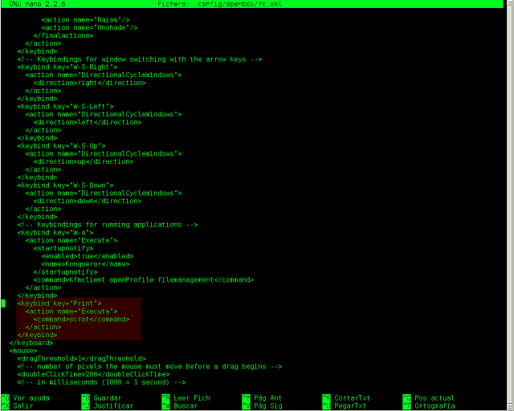
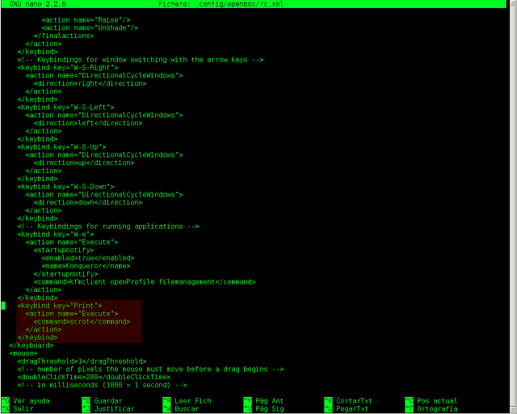

Screenshots en Arch Linux

Ayer, mientras preparaba un screenshot para la siguiente entrada, me topé con un obvio problema: en Fedora tomaba screenshots con la tecla “Impr Pant Petsis” (según lo esperado, claro.) Pero cuando lo intente en mi Arch nada sucedió, así que empecé a buscar el software de captura que fuera de mi agrado y encontré scrot, expongo el proceso para poder tomar screenshots en nuestra instalación de Arch:
Instalamos scrot (software de captura):
pacman -S scrot
Tendremos que agregar a la configuración de Openbox (si lo usas) una tecla que ejecute scrot.
En nuestro directorio home entraremos en el directorio .config y luego en el directorio openbox editamos el archivo rc.xml.
nano rc.xml
Buscamos la linea </keyboard> y justo antes de esta hacemos un espacio para agregar una nueva etiqueta:
</keybind>
<keybind key="Print">
<action name="Execute">
<command>scrot</command>
</action>
</keybind>
</keyboard>
Quedando:

Damos Ctrl+O, Enter para guardar; y Ctrl+W para salir.
Tal vez sea necesario un reboot del sistema; luego de darle a la tecla “ImprPantPetsis” tendrás en tu directorio home un .png con la fecha actual y tu screenshot.
Ayer, mientras preparaba un screenshot para la siguiente entrada, me topé con un obvio problema: en Fedora tomaba screenshots con la tecla “Impr Pant Petsis” (según lo esperado, claro.) Pero cuando lo intente en mi Arch nada sucedió, así que empecé a buscar el software de captura que fuera de mi agrado y encontré scrot, expongo el proceso para poder tomar screenshots en nuestra instalación de Arch:
Instalamos scrot (software de captura):
pacman -S scrot
Tendremos que agregar a la configuración de Openbox (si lo usas) una tecla que ejecute scrot.
En nuestro directorio home entraremos en el directorio
.configy luego en el directorio openbox editamos el archivorc.xml.nano rc.xml
Buscamos la linea </keyboard> y justo antes de esta hacemos un espacio para agregar una nueva etiqueta:
</keybind>
<keybind key="Print">
<action name="Execute">
<command>scrot</command>
</action>
</keybind>
</keyboard>Quedando:

Damos Ctrl+O, Enter para guardar; y Ctrl+W para salir.
Tal vez sea necesario un reboot del sistema; luego de darle a la tecla “ImprPantPetsis” tendrás en tu directorio home un .png con la fecha actual y tu screenshot.